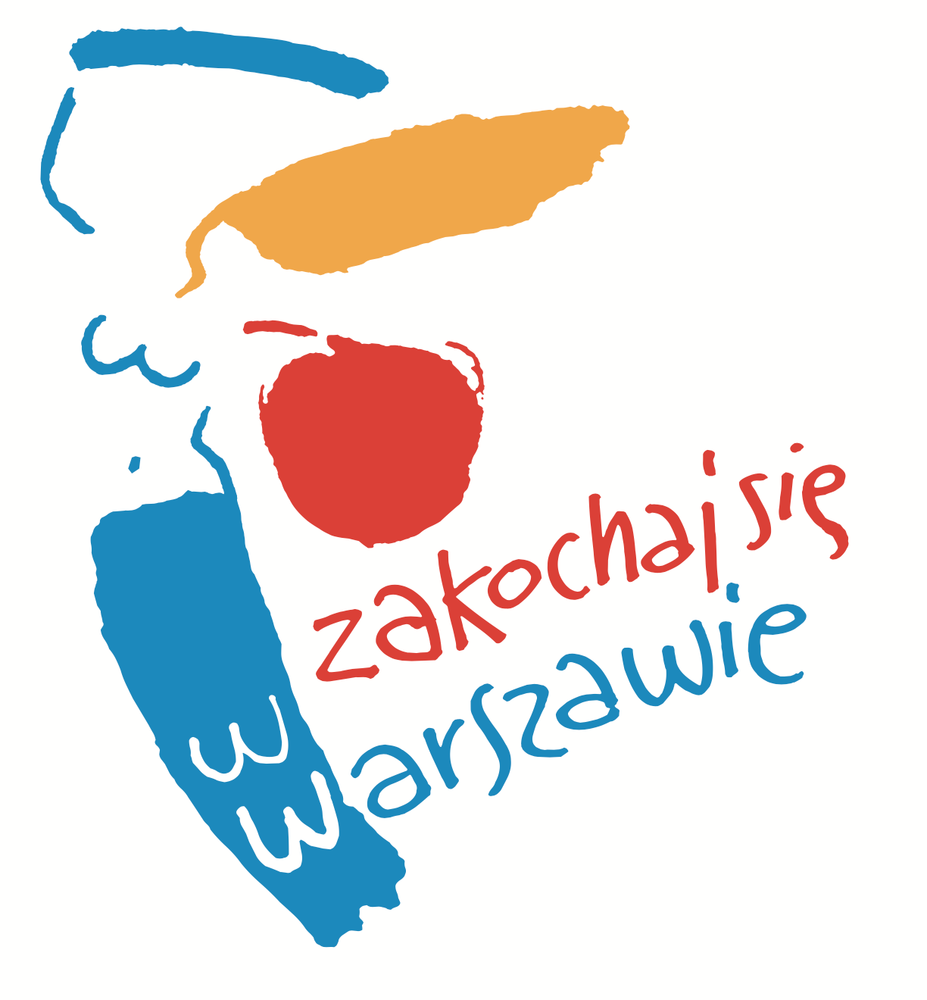

<!DOCTYPE html>
<html lang="pl">
  <head>
    <meta charset="UTF-8" />
    <meta name="viewport" content="width=device-width, initial-scale=1.0" />
    <meta http-equiv="X-UA-Compatible" content="ie=edge" />
    <title>BIOM - template</title>
    <link rel="stylesheet" href="./css/style.css" />
  </head>
  <body>
    <!-- BIOM - main content start -->
    <main class="main-content"></main>
    <!-- BIOM - main content end -->

    <!-- BIOM - footer start -->
    <footer class="footer">
      <div class="footer__top">
        <div class="footer__nav">
          <h3 class="footer__nav-heading">Przydatne informacje</h3>
          <ul class="footer__nav-items">
            <li class="footer__nav-item">
              <a href="#" class="footer__nav-link">
                Pomoc systemowa
              </a>
            </li>
            <li class="footer__nav-item">
              <a href="#" class="footer__nav-link">
                Wskaźniki zewnętrzne
              </a>
            </li>
            <li class="footer__nav-item">
              <a href="#" class="footer__nav-link">
                BIOM API - Dokumentacja
              </a>
            </li>
            <li class="footer__nav-item">
              <a href="#" class="footer__nav-link">
                Informacje techniczne
              </a>
            </li>
            <li class="footer__nav-item">
              <a href="#" class="footer__nav-link">
                Formularz kontaktowy
              </a>
            </li>
            <li class="footer__nav-item">
              <a href="https://wwww.um.warszawa.pl/" class="footer__nav-link">
                https://wwww.um.warszawa.pl/
              </a>
              <span class="footer__nav-link__description">
                - Strona urzędu miejskiego m.st. Warszawa
              </span>
            </li>
            <li class="footer__nav-item">
              <a href="https://2030.um.warszawa.pl/" class="footer__nav-link">
                https://2030.um.warszawa.pl/
              </a>
              <span class="footer__nav-link-description">
                - Strategia #Warszawa2030
              </span>
            </li>
            <li class="footer__nav-item">
              <a
                href="https://zielona.um.warszawa.pl/"
                class="footer__nav-link"
              >
                https://zielona.um.warszawa.pl/
              </a>
              <span class="footer__nav-link-description">
                - Zielona Warszawa
              </span>
            </li>
          </ul>
        </div>
        <div class="footer__logo">
          
        </div>
        <div class="footer__contact">
          <h3 class="footer__contact-heading">Kontakt</h3>
          <p class="footer__contact-item">
            
            Urząd m.st.Warszawy
          </p>
          <p class="footer__contact-item">
            Biuro Funduszy Europejskich i Polityki Rozwoju
          </p>
          <p class="footer__contact-item">
            Pałac Kultury i Nauki
          </p>
          <p class="footer__contact-item">
            Plac Defilad 1
          </p>
          <br />
          <p class="footer__contact-item">
            
            22 443 07 92
          </p>
          <p class="footer__contact-item">
            
            warszawa2030@um.warszawa.pl
          </p>
        </div>
      </div>
      <div class="footer__bottom">
        <p class="footer__copy">
          &copy; 2019 Bank Informacji o Mieście. Urząd m.st. Warszawy | Polityka
          prywatności
        </p>
      </div>
    </footer>
    <!-- BIOM - footer end -->
  </body>
</html>
